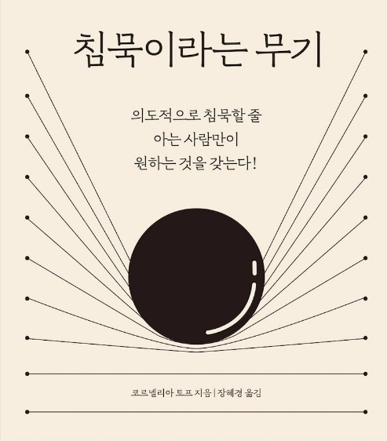

BOOK / BOOKER-LIST
01.침묵이라는 무기
말과 침묵 사이의 적절한 비율을 두는 방법
주말까지 D-3 우리 힘..내요!!
의도적으로 침묵할 줄 아는 사람만이 원하는 것을 갖는다!
침묵이라는 무기코르넬리아 토프 지음

가만히 나의 마음과 대화하다 보면, 잡생각들이 떠올라 얼른 유튜브를 켜서 이 생각을 없애고 싶을 수도. 조금 있다 만날 친구와 무엇을 먹을지 고민을 하기도 하죠.
바쁜 출퇴근을 반복하다 보면, '아 조용한 어디 가서 가만히 있고 싶다'라는 생각 들지 않나요?
외부의 정적만을 바란다면 지금 당장 화장실에 앉아도 충분히 가능합니다.
하지만 우리가 정말 필요한 것은 "내면의 침묵" 이에요.
"00아 티브이 끄고, 손 씻고, 냉장고에서 반찬 꺼내고, 밥 먹게 앉아" 쉼 없는 대화의 예시 중 가장 흔하게 들을 수 있는 말이죠.
TV를 끄고 나면 "손 씻어야지"라고 한마디 듣게 되면 반사적으로 이 말이 나옵니다
"할 거야! 왜 이렇게 잔소리야"
대나무숲
Q. 직장에서 하고 싶은 말을 못했을 때 느꼈던 스트레스의 정도는?
Q. 상사의 잔소리를 듣는데,무슨 말을 하는지 이해가 되지 않았던 적이 있다!
NO
YES
Q. 나를 괴롭히는 모든 사람에게 하고 싶은 말이 있나요?
지금 들리는 음악소리, 라디오 소리 모두 끄고 완벽한 정적 속에서 1분만 있어볼까요?
가만히 나의 마음과 대화하다 보면, 잡생각들이 떠올라 얼른 유튜브를 켜서 이 생각을 없애고 싶을 수도. 조금 있다 만날 친구와 무엇을 먹을지 고민을 하기도 하죠.
수 천명의 직원을 거느리고 매일 수백억 달러어치의 계약을 성사시키는 경영자에게 불가능한 것이 하나 있다고 해요.그것은 바로 TV, 노트북, 휴대폰이 없는 방에 아무것도 하지 않고 홀로 앉아있는 것.
왜 우리는 침묵에 익숙하지 않을까요?
고요함을 필요로 하면서도 고요함을 견디지 못하기 때문
바쁜 출퇴근을 반복하다 보면, '아 조용한 어디 가서 가만히 있고 싶다'라는 생각 들지 않나요?
외부의 정적만을 바란다면 지금 당장 화장실에 앉아도 충분히 가능합니다.
하지만 우리가 정말 필요한 것은 "내면의 침묵" 이에요.
바쁘게 하루를 보내다 퇴근을 하면 몰려오는 씁쓸하고 고요한 혼자의 시간이 싫어서 차에 타자마자 라디오를 틀고,
집에 도착하자마자 보지도 않는 TV를 켜 외롭지 않도록 환경을 만들어 위안을 얻기도 합니다.
고요함을 견디지 못하는 이유는 아직 한 번도 그 시간에 스며들어 본 적이 없어서, 그래서 익숙지 않아 그런 것 아닐까요.
쉼 없이 이어지는 대화에서 살아남기
"00아 티브이 끄고, 손 씻고, 냉장고에서 반찬 꺼내고, 밥 먹게 앉아" 쉼 없는 대화의 예시 중 가장 흔하게 들을 수 있는 말이죠.
TV를 끄고 나면 "손 씻어야지"라고 한마디 듣게 되면 반사적으로 이 말이 나옵니다
"할 거야! 왜 이렇게 잔소리야"
기다림(침묵) 없는 것은 대화가 아닌, '독백' 입니다. 그러한 말을 하며 상대와 대화하기를 바라는 것은
마스크 없는 외출과 같은 것이 아닐까요
아래 두 유형의 차이가 보이시나요?
울고있는 아이에게 무슨일이냐고 계속 해서 물어보는 A와 가만히 우는 아이를 안아주는 B.
화 내는 친구의 말을 받아치는 A와 가만히 그 친구의 말이 끝날때까지 기다리는 B.
쉬지 않고 잔소리를 쏘아대는 A와 잘못에 대해서만 말을 하고 끝내는 B.
나와 하는 대화도 마찬가지입니다. 실수에 대해 계속해서 자책하는 나에게
마음: 왜 그렇게 화가 난 거야?
나: 마감시간에 맞춰서 파일을 보냈어야 하는데 잠이 들어서 보내지 못했어
마음: 그랬구나, 그래서 계속 화가 났구나. 그럼 이제 어떻게 할 거야?
나: 이미 지나간 일이니깐, 경험을 배운 좋은 경험이라고 생각해 보려고
대화 속의 나의 감정이 어떤지 주체성을 찾기 위해서라도,
잠시 대화를 멈추고 돌아보는 시간을 가져보세요. 지금 왜 이렇게 화가 난 건지, 왜 눈물이 계속 흐르는 건지 스스로에게 물어보는 시간을요.
말을 해야 한다는 강박에서 벗어나기
엘리베이터 안의 옆집 아저씨와 서있는 장면, 소개팅 직전의 어색한 분위기, 길에서 마주친 중학교 동창.
숨 막히는 침묵을 깨기 위해 하는 말은 정보 전달의 목적이 아닌정적을 깨트리기 위한 소음 이라고 설명합니다.
오랜만에 만난 친구와 대화를 하다 찾아오는 정적은 두려워하는 이유는 그 자체가 무서운 것이 아니라, 조용할 때 찾아오는 생각이 두려워서.
'혹시 내가 말 걸어서 기분이 안 좋은가?'.'내가 입 냄새가 나서 그런가?' 하는 불안한 마음의 소리를 피하기 위해 어떻게 해든 말을 하려고 애쓰죠.
그럼 반대로 생각을 해볼까요. 이 친구와 무엇을 먹을지 고민하는 중이었는데, 친구가 '애가 나를 안 좋아하나?'
라는 생각을 한다면 어떤가요.말은 정체성을 대신하지 못합니다.
말이 정체성을 대신한다면 침묵은 무의미에 대한 추락일 뿐이죠. 쉴 틈 없이 아이에게 말을 거는 아버지만 좋은 아빠는 아닌 듯이요. 무슨 말을 해야 할지
모르겠고 이 상황이 너무 어색하다면 자신에게 물어보세요. 지금 이 상황이 어떻게, 왜 어색하다고 느끼는지
그런 내면의 대화를 나누고 나면, 그 후에 건네는 말은 불안한 내면에서 나오는 말보다 분명히 더 나을 거예요.
우리는 상대를 즐겁게 해줘야 하는 의무를 가진 사람도 아니고, 상대도 우리에게 재미있는 말을 해줄 것이라는 소망으로 마냥 기다릴 수는 없습니다.
날씨, 아는 친구, 음식과 같은 소소한 주제 거리로 적극적인 대화를 이어가보세요. 침묵은 대화 사이의 '쉼'일 뿐!
고기 1: 비계 3 = 최고의 삼겹살
갑자기 왠 삼겹살이냐고요? 적당한 비계와 고기가 어우러져야 맛있는 삼겹살인것 처럼 대화에도 적당한 말과 쉼의 비율이
갖춰져야 맛있는 대화가 된다고 생각해요. 모든 질문이 OX퀴즈는 아니니깐, 물음에 바로 대답하기 보다는 적당한 쉼을
통해 내면의 말의 대답을 듣고 말을 하는거죠. 면접을 볼때, 면접관이 "이 회사에 왜 지원을 하셨습니까?" 라고 물으면
쉴틈없이 "제가 여기에 지원한 이유는 ~~" 하며 대답하는 지원자와 잠시 쉼을 두고 대답을 하는 지원자 중에 어느 지원자의
말에 진정성을 더 느끼실것 같나요?
손 안대고 코 풀기
참을수 없는 모욕적인 말을 들었을때 반사적으로 되받아 치는 것은 때때로 아무 도움이 되지않습니다.
더욱 더 격한 감정싸움만 일으킬 뿐이죠.
그런 상황에도 침묵 으로 받아치는 거죠. 바로
공격적인 침묵으로요.
직장생활을 하다보면, 터무니 없는 것들로 시간낭비를 하며 잔소리를 하는 사람이 한 명쯤은 꼭 있어요.
그 상사 때문에 매일 출근하는 게 스트레스고 같이 일하는 날이면, 몸이 쑤시고 아플 정도였습니다.
그 날에도, 그 분은 저의 작은 실수에 핏줄을 세워하며 화를 냈습니다. 평소에는 그 말을 들으면 눈을 아래로 내리고,
"죄송합니다" 라는 말을 하며 얼른 이 상황이 끝나길 바라곤했습니다. 그 날에는 너무 지치고 힘들어 아무말도 하지않은 채로
가만히 보았더니 정말 신기한 결과가 나왔습니다. 하던 말을 더듬다가 "아무튼 이제 그렇게 하지마!"
그렇게 독백을 끝내버린거죠. 불평은 목표에 달성하기 전까지 멈추지 않습니다.
본인의 화를 다 분출하기 전까지 말대꾸를 하던지, 욕을 하던지 상관없이 일단 뱉고 보는거죠.
그런 사람에게 "그래, 하고싶은 말 다해봐. 기다려줄께" 라는 마음으로 침묵과 함께 기다려준다면,
잔뜩 가열된 대화를 식히는 얼음물처럼 잔잔한 대화로 돌아갑니다.
이런 침묵의 방법이 수십마디의 말을 하며 받아치는 것보다 훨씬 적은 감정소비로 대처가능하다니. 정말 좋은 방법이지 않나요?
불안한 생각을 맞이할 준비
카페에서 주문한 커피를 기다릴 때. 신호 대기가 걸린 자동차 안에서. 마트에서 계산을 기다리며. 이 순간들에 우리는 자연스럽게 휴대폰 화면을 킵니다.
읽지 않은 연락이 없는지, 내일 날씨는 어떤지, 주식은 올랐는지 짧은 순간에도 아무것도 보지 않고 가만히 보내는 시간은 생각보다
별로 없을 겁니다.
편안하게 앉거나 누워 눈을 감아보세요. 생각하기 싫은 일들이 떠오르기도, 부끄러웠던 일이 떠오르기도, 미래에 대한 걱정이
쏟아져 얼른 눈을 뜨고 뭐라도 하고 싶은 생각이 들 수도 있습니다. 이제는 그런 생각이 들면 " 왜 그렇게 불안해? "
라며 스스로에게 한번 물어보세요.
잠시 제 이야기를 해볼게요. 저는 행복한 일이 생기면, 그 감정을 즐기지 못하고 이 기분이 사라지면 얼마나 슬플까?라는
생각을 하며 되도록이면 나중에 실망을 덜 할 수 있도록 행복한 상황에 벗어나 평소의 감정으로 돌아가기 위해 애를 썼습니다.
자기 전, 눈을 감으면 일을 하며 느꼈던 화나는 감정, 불합리한 상황에서 겪은 억울한 감정들이 머리에 가득 차서, 얼른 휴대폰을
켜 눈이 아플 때까지 유튜브를 보고 잠을 청하기도 합니다.
이 책을 읽고 내면의 대화를 통해 정리되지 않아 계속해서 떠오른 감정들을 정리하고 이해했어요.
적당한 쉼이 있는 대화가 서로의 이야기를 더 들을 수 있고, 큰 에너지 없이 헛소리에 대응하는 방법을
배웠어요. 코로나 바이러스로 혼자의 시간을 많이 보내게 되어, 무엇을 해야 할지 어떤 일을 했을 때 행복했는지
찾을 수 없어 방황했던 시기에 정말 큰 도움이 된 책이에요. 의도적으로 침묵할 줄 아는 사람만이 원하는 것을 갖습니다.
마음: 왜 그렇게 화가 난 거야?
나: 마감시간에 맞춰서 파일을 보냈어야 하는데 잠이 들어서 보내지 못했어
마음: 그랬구나, 그래서 계속 화가 났구나. 그럼 이제 어떻게 할 거야?
나: 이미 지나간 일이니깐, 경험을 배운 좋은 경험이라고 생각해 보려고
대화 속의 나의 감정이 어떤지 주체성을 찾기 위해서라도,
잠시 대화를 멈추고 돌아보는 시간을 가져보세요. 지금 왜 이렇게 화가 난 건지, 왜 눈물이 계속 흐르는 건지 스스로에게 물어보는 시간을요.
말을 해야 한다는 강박에서 벗어나기
엘리베이터 안의 옆집 아저씨와 서있는 장면, 소개팅 직전의 어색한 분위기, 길에서 마주친 중학교 동창.
숨 막히는 침묵을 깨기 위해 하는 말은 정보 전달의 목적이 아닌정적을 깨트리기 위한 소음 이라고 설명합니다.
오랜만에 만난 친구와 대화를 하다 찾아오는 정적은 두려워하는 이유는 그 자체가 무서운 것이 아니라, 조용할 때 찾아오는 생각이 두려워서.
'혹시 내가 말 걸어서 기분이 안 좋은가?'.'내가 입 냄새가 나서 그런가?' 하는 불안한 마음의 소리를 피하기 위해 어떻게 해든 말을 하려고 애쓰죠.
그럼 반대로 생각을 해볼까요. 이 친구와 무엇을 먹을지 고민하는 중이었는데, 친구가 '애가 나를 안 좋아하나?'
라는 생각을 한다면 어떤가요.말은 정체성을 대신하지 못합니다.
말이 정체성을 대신한다면 침묵은 무의미에 대한 추락일 뿐이죠. 쉴 틈 없이 아이에게 말을 거는 아버지만 좋은 아빠는 아닌 듯이요. 무슨 말을 해야 할지
모르겠고 이 상황이 너무 어색하다면 자신에게 물어보세요. 지금 이 상황이 어떻게, 왜 어색하다고 느끼는지
그런 내면의 대화를 나누고 나면, 그 후에 건네는 말은 불안한 내면에서 나오는 말보다 분명히 더 나을 거예요.
우리는 상대를 즐겁게 해줘야 하는 의무를 가진 사람도 아니고, 상대도 우리에게 재미있는 말을 해줄 것이라는 소망으로 마냥 기다릴 수는 없습니다.
날씨, 아는 친구, 음식과 같은 소소한 주제 거리로 적극적인 대화를 이어가보세요. 침묵은 대화 사이의 '쉼'일 뿐!
말은 정체성을 대신하지 못합니다.
말이 정체성을 대신한다면 침묵은 무의미에 대한 추락일 뿐이죠. 쉴 틈 없이 아이에게 말을 거는 아버지만 좋은 아빠는 아닌 듯이요. 무슨 말을 해야 할지
모르겠고 이 상황이 너무 어색하다면 자신에게 물어보세요. 지금 이 상황이 어떻게, 왜 어색하다고 느끼는지
그런 내면의 대화를 나누고 나면, 그 후에 건네는 말은 불안한 내면에서 나오는 말보다 분명히 더 나을 거예요.